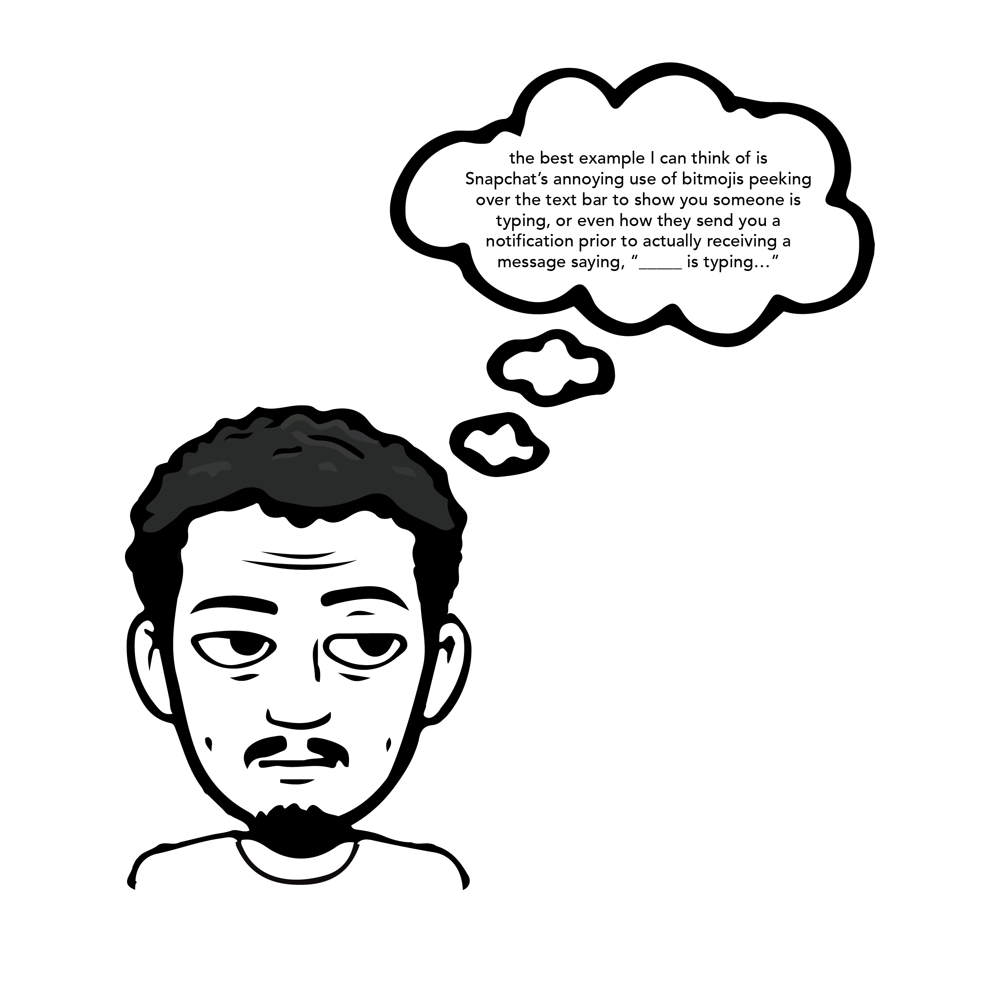

things i found interesting:
“With the ellipsis, hesitation in response is indicated visually, and in real time, with interlocutors left to speculate on each other’s motives.”
-depending on the conversation, when we see someone is typing a message to send back to us, there’s a good chance we think “ah shit…”
-the use of the ellipsis as a graphic indicator that someone is typing makes me think about every time I enter a “digital room”, see it, and instantly feel some odd sense of embarrassment: as if I invaded someone’s privacy.

“It may not be followed by anything, in which case the keystrokes are left to hang in the ethernet; it may indeed be concluded with a response; or it may even be replaced by “...” as a typed response, so that the dot dot dot is changed from a placeholder to a statement”
“Both social and news media seek to appeal to and produce a sense that something important is just about to happen. By exploiting anticipation and appealing to a sense of futurity, both intend to capture their audience for as long as possible.”
“What is the lasting effect on a user's subjectivity of having their attention (and performed self) fragmented across so many platforms? At what point does a group chat grow so large that it is no longer an intimate interaction, and how do the multiple personas enacted within a single social media network mesh with a user’s wider social media ecology?”